Paso a paso: problema, datos, Weka, modelos, resultados e integración en la aplicación
SmartBody genera planes nutricionales y rutinas personalizadas, pero no indica cuánto tiempo podría necesitar una persona para alcanzar su peso objetivo. La pregunta de investigación es si ese tiempo puede estimarse a partir de datos físicos, del plan, de la actividad física y de la adherencia al plan.
Según la clase, la minería de datos transforma datos en bruto en conocimiento práctico, y la minería predictiva sirve para anticipar tendencias y ayudar a elegir decisiones. Aquí el conocimiento es una estimación orientativa de las semanas necesarias.
| Elemento | Decisión |
|---|---|
| Tipo de problema | Regresión supervisada: la variable objetivo es numérica (semanas_estimadas). |
| Metodología | CRISP-DM, con sus seis fases (diapositivas 7 a 14 de la clase). |
| Herramienta de minería | Weka 3.8.6, usado desde su interfaz gráfica para explorar y evaluar, y desde su API de Java para entrenar y servir el modelo. |
| Datos | Dataset sintético de 100.000 filas. No son datos clínicos reales. |
Weka es una herramienta libre de la Universidad de Waikato (Nueva Zelanda), escrita en Java. Reúne algoritmos de aprendizaje automático, herramientas para preparar datos y métodos de evaluación. Las diapositivas de la clase la listan entre las herramientas de minería de datos, con la ventaja de tener interfaz gráfica amigable y una amplia colección de algoritmos de clasificación, agrupación y regresión.
Weka se puede usar de tres formas:
Para que los resultados sean reproducibles, usamos la misma versión en todas partes: weka-stable 3.8.6.
| Componente | Versión / verificación |
|---|---|
| Java | OpenJDK 17.0.19 (comando java -version). |
| Weka | weka-stable 3.8.6 desde Maven Central (nz.ac.waikato.cms.weka:weka-stable:3.8.6). |
| Base de datos | MariaDB 10.4 (XAMPP), base smartbody_mineria para el dataset. |
| Equipo | Windows 11, 3,8 GB de RAM, sin Docker. Por eso se usa -Xmx2g. |
Weka no se instala con un ejecutable: sus librerías se descargan con Maven. Creamos un archivo pom.xml mínimo en la carpeta mineria\ que declara solo Weka. Maven descarga también las dependencias transitivas (álgebra matricial y librerías nativas de netlib, necesarias para la regresión lineal):
<dependency>
<groupId>nz.ac.waikato.cms.weka</groupId>
<artifactId>weka-stable</artifactId>
<version>3.8.6</version>
</dependency>
# Copiar todas las librerías a mineria\lib
mvn -f mineria\pom.xml dependency:copy-dependencies -DoutputDirectory=lib -DincludeScope=runtime
Al final, la carpeta lib\ contiene 32 archivos JAR. Lo verificamos con un programa mínimo que carga weka.core.Instances e imprime la versión, que es 3.8.6.
cd c:\proyects\SmartBody\mineria java -Xmx2g -cp "lib\*" weka.gui.GUIChooser
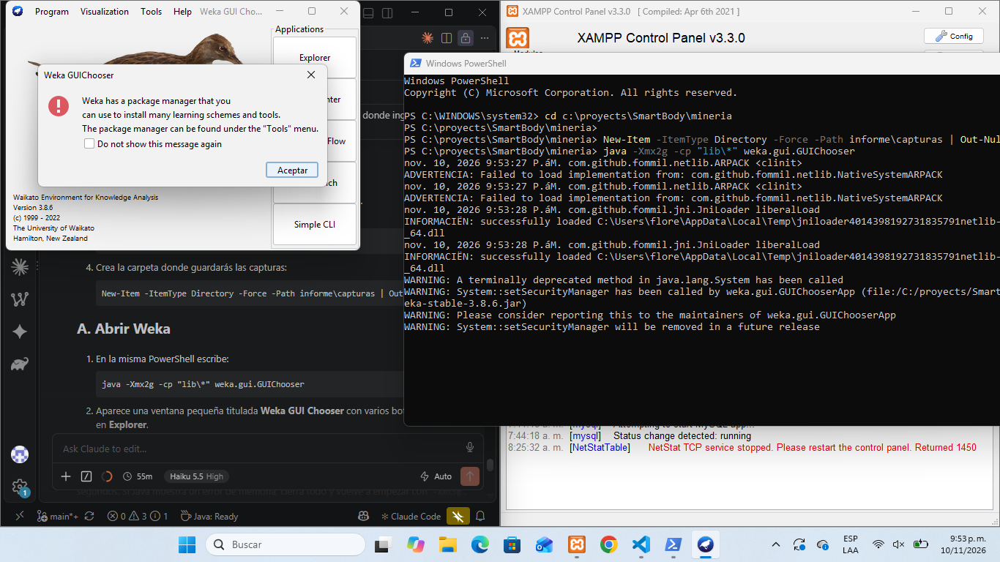
No hay datos longitudinales reales con consentimiento, así que generamos un dataset sintético con un programa Java de un solo archivo (mineria\GeneradorDataset.java). Usa una semilla fija (42), así que cualquier persona puede regenerar exactamente el mismo archivo.
PERDER_PESO: kgSemana = min( (balance*7*adhN/100 + ejercicioKcal*adhE/100) / 7700 , 1% del peso )
GANAR_MASA: kgSemana = 0,25 * factorExperiencia * (0,5*adhN/100 + 0,5*adhE/100)
semanas_estimadas = diferencia / kgSemana * ruido, ruido ~ N(1; 0,10) en [0,75; 1,25]
acotado a [2; 104]
Esta regla define el valor "real" de cada persona. Por eso las correlaciones altas que obtuvimos validan el flujo, pero no la precisión sobre personas reales (ver sección 8).
| Tipo de registro | Filas | Porcentaje | Qué contiene |
|---|---|---|---|
| LIMPIO | 80.000 | 80 % | Datos coherentes y en rango. |
| OUTLIER | 10.000 | 10 % | Valores extremos pero plausibles (edades de 62 a 80, pesos de 120 a 160 kg). |
| PROBLEMATICO_DUPLICADO | 3.500 | 3,5 % | Copias exactas de registros limpios. |
| PROBLEMATICO_FALTANTE | 3.500 | 3,5 % | Entre 1 y 3 campos vacíos. |
| PROBLEMATICO_INVALIDO | 3.000 | 3 % | Edad -5 o 250, altura 30 o 320 cm, adherencia 150 %, IMC incoherente, etc. |
Los 100.000 registros se cargaron en la base smartbody_mineria (MariaDB). El script mineria\sql\01_dataset_predictivo.sql crea la tabla y carga el CSV con LOAD DATA LOCAL INFILE. El resultado se verificó: 100.000 filas y 100.000 identificadores únicos.
Weka trabaja con ficheros ARFF. Cada atributo tiene un tipo (numérico o nominal). La última columna es la clase, es decir, lo que el modelo aprende a predecir:
@relation smartbody_semanas_estimadas
@attribute edad NUMERIC
@attribute sexo {MASCULINO,FEMENINO}
@attribute altura_cm NUMERIC
...
@attribute semanas_estimadas NUMERIC
@data
28,MASCULINO,170.0,90.0,80.0,10.0,31.14,PERDER_PESO,...,22.6
Los identificadores (id_registro, usuario_id) y la etiqueta de control (tipo_registro) no entran al ARFF. Así el modelo no puede usarlos para hacer trampa.
Abrimos el dataset original en Weka Explorer (pestaña Preprocess → Open file...). La ventana muestra la relación, el número de instancias (100.000) y de atributos (19). Al seleccionar cada atributo, Weka muestra sus estadísticas (mínimo, máximo, media y desviación) y su número de valores faltantes.
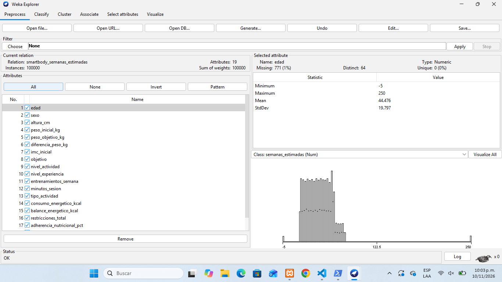
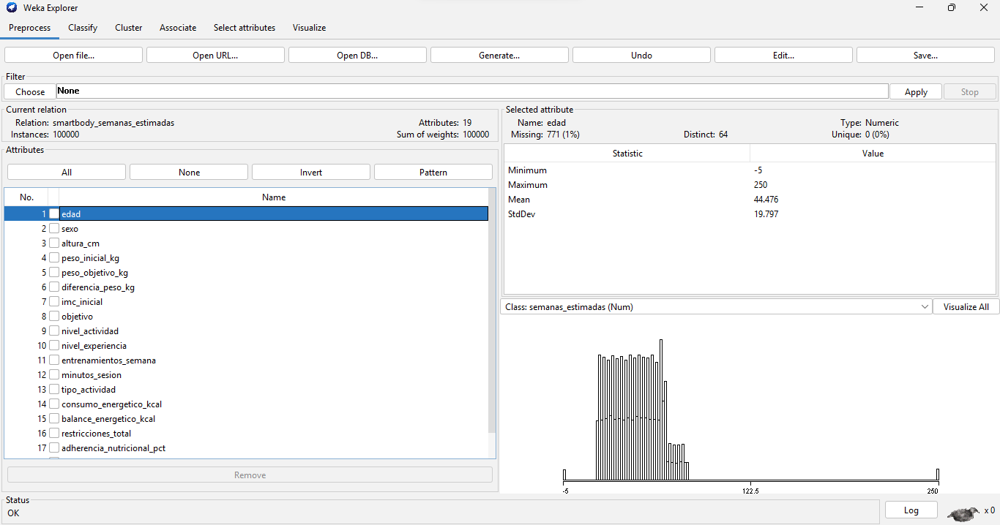
edad: el mínimo es -5 y el máximo 250. Son valores imposibles, y por eso se detectan en la fase de preparación.El informe de calidad se generó también con la API de Weka (mineria\herramientas\InformeCalidadArff.java), que equivale a la pestaña Preprocess. Estos son los hallazgos:
| Problema | Filas | Ejemplo |
|---|---|---|
| Valores faltantes | 3.500 (3,50 %) | Campos altura_cm, edad, minutos_sesion, etc. |
| Duplicados | 3.500 (3,50 %) | Quedan 96.500 filas distintas. |
| Rango fuera de lo válido | entre 610 y 1.230 por regla | Edad, altura, adherencia, minutos y semanas. |
| Incoherencia | 635 | Objetivo PERDER_PESO con peso objetivo mayor que el peso inicial. |
Los registros limpios y los outliers no fallan ninguna regla. Solo fallan los problemáticos.
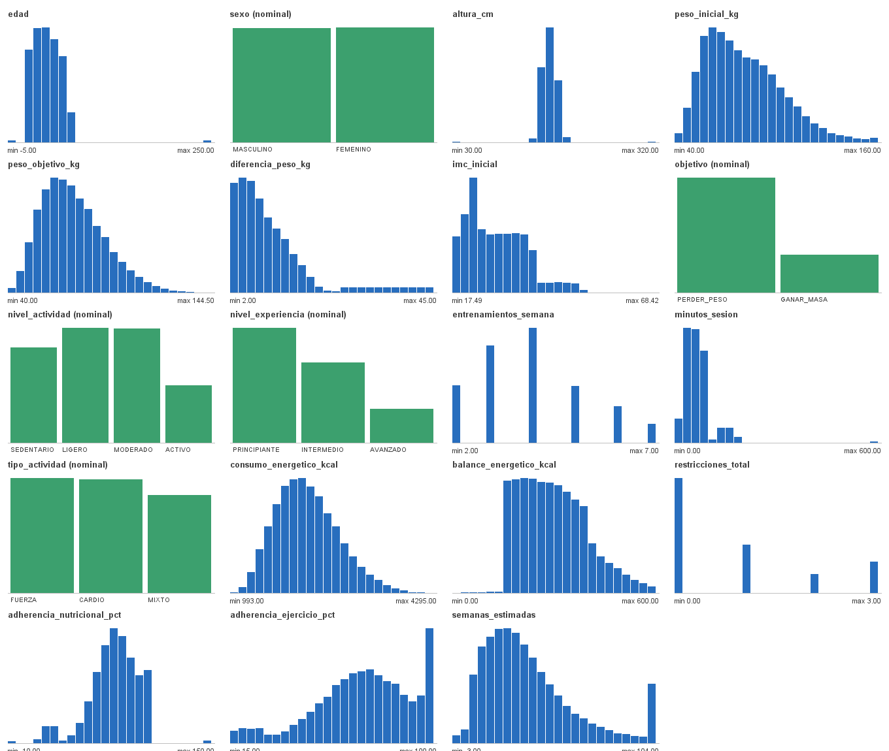
Pasos aplicados, en este orden:
Estas reglas están en mineria\herramientas\LimpiezaDataset.java. Fragmento:
static boolean cumpleReglas(Instance in, Instances d) {
...
if (edad < 12 || edad > 100) return false;
if (adhN < 0 || adhN > 100) return false;
if (semanas <= 0 || semanas > 104) return false;
if (Math.abs(pesoIni / Math.pow(altura / 100.0, 2) - imc) > 0.05) return false;
String obj = in.stringValue(d.attribute("objetivo"));
if (obj.equals("PERDER_PESO") && pesoObj >= pesoIni) return false;
return true;
}
| Paso | Filas |
|---|---|
| Dataset original | 100.000 |
| Eliminadas por duplicados | -3.500 |
| Eliminadas por faltantes | -3.500 |
| Eliminadas por inválidos | -3.000 |
| Dataset limpio | 90.000 |
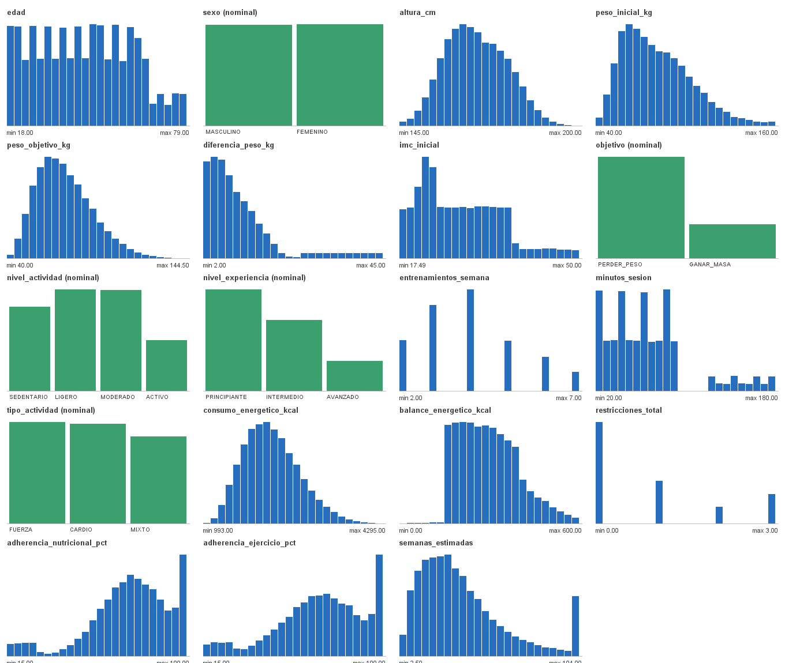
Comparamos tres algoritmos de regresión de Weka. Todos usan el mismo conjunto limpio, la misma validación cruzada de 10 particiones y la misma semilla:
| Algoritmo | Familia en Weka | Por qué lo probamos |
|---|---|---|
| LinearRegression | functions | Línea base sencilla y rápida. |
| REPTree | trees | Árbol de decisión, de la familia de los árboles que estudiamos en clase. |
| RandomForest | trees | Conjunto de 100 árboles, para comparar precisión. |
LinearRegression -S 0 -R 1.0E-8 -num-decimal-places 4 REPTree -M 2 -V 0.001 -N 3 -S 42 -L -1 -I 0.0 RandomForest -P 100 -I 100 -num-slots 1 -K 0 -M 1.0 -V 0.001 -S 42
Estas opciones son las del programa Java de entrenamiento (semilla 42). En el Explorer, la semilla por defecto es 1 y aparece como -S 1 en la salida.
Y el bucle de validación cruzada del programa de entrenamiento:
Instances base = new Instances(datos);
base.randomize(new Random(SEMILLA));
for (int k = 0; k < PARTICIONES; k++) {
Instances entrenamiento = base.trainCV(PARTICIONES, k);
Instances prueba = base.testCV(PARTICIONES, k);
Classifier c = fabrica.get();
c.buildClassifier(entrenamiento);
for (int i = 0; i < prueba.numInstances(); i++) {
Instance in = prueba.instance(i);
double pred = c.classifyInstance(in); // se compara con in.classValue()
...
}
}
Al final se entrena cada algoritmo con todo el conjunto limpio y se guarda con su cabecera (SerializationHelper.write). Así el backend lo carga sin volver a entrenar.
Para cumplir el enunciado, repetimos el modelado en la pestaña Classify. Pasos: Choose → trees → REPTree; en Test options aparece Cross-validation, Folds 10; la clase es (Num) semanas_estimadas; luego se pulsa Start.
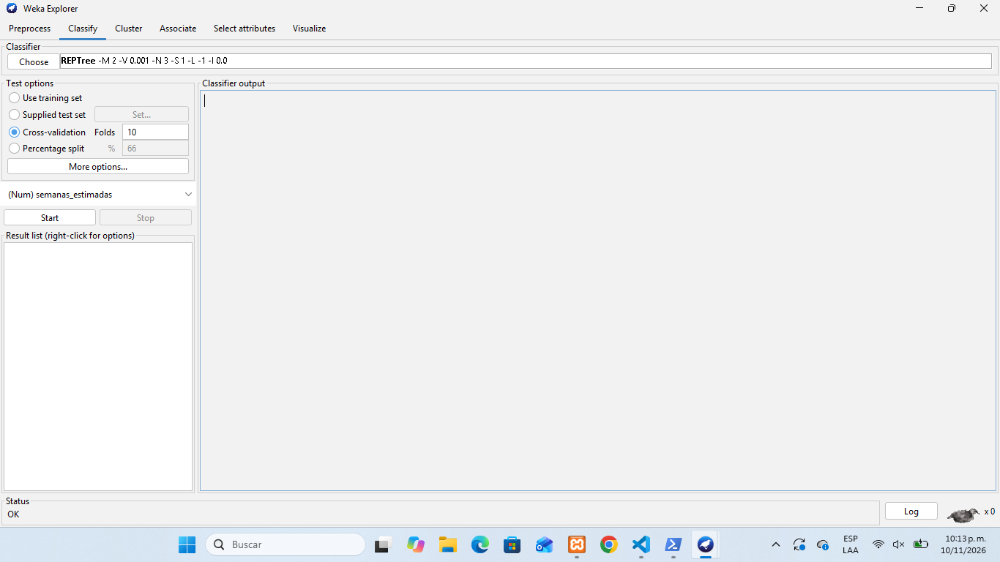
La salida incluye la misma estructura que usamos en el informe: Run information, el modelo construido con todos los datos y el bloque Summary.
Usamos las métricas de regresión que pide la clase: MAE (error absoluto medio, en semanas), RMSE (penaliza más los errores grandes) y coeficiente de correlación (CC). Además calculamos R² y el error por rango de semanas reales.
| Algoritmo | MAE (sem) | RMSE (sem) | CC | R² | Tamaño del modelo | Tiempo CV |
|---|---|---|---|---|---|---|
| LinearRegression | 14,11 | 18,53 | 0,658 | 0,433 | 9 KB | 18 s |
| REPTree (elegido) | 4,72 | 6,94 | 0,960 | 0,921 | 1,3 MB | 99 s |
| RandomForest | 3,74 | 5,38 | 0,978 | 0,952 | 519 MB | 3.230 s |
Cifras con la semilla 1 del Explorer, que es el valor por defecto. Con la semilla 42 de nuestro programa Java, las cifras coinciden en el tercer decimal (REPTree MAE 4,732; RandomForest 3,739), archivo resultados_modelos.txt.
| Algoritmo | 0-12 sem | 12-24 sem | 24-48 sem | 48-104 sem |
|---|---|---|---|---|
| LinearRegression | 14,46 | 13,48 | 9,41 | 22,00 |
| REPTree | 1,64 | 2,87 | 4,74 | 7,53 |
| RandomForest | 1,78 | 2,37 | 3,35 | 6,30 |
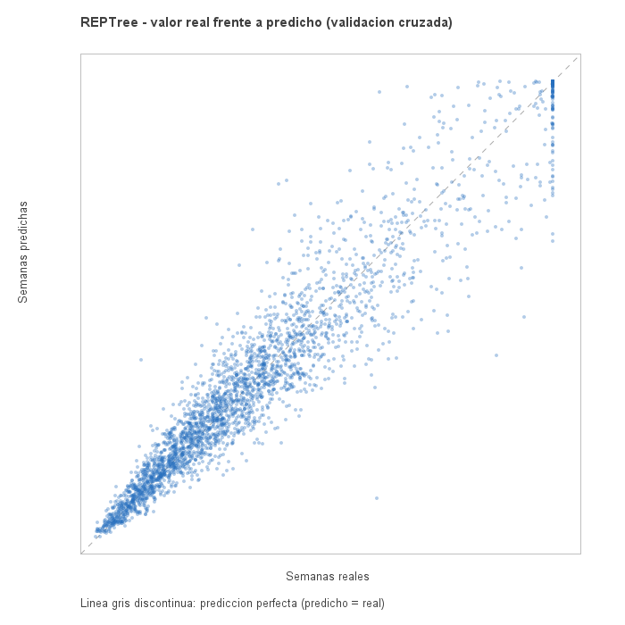
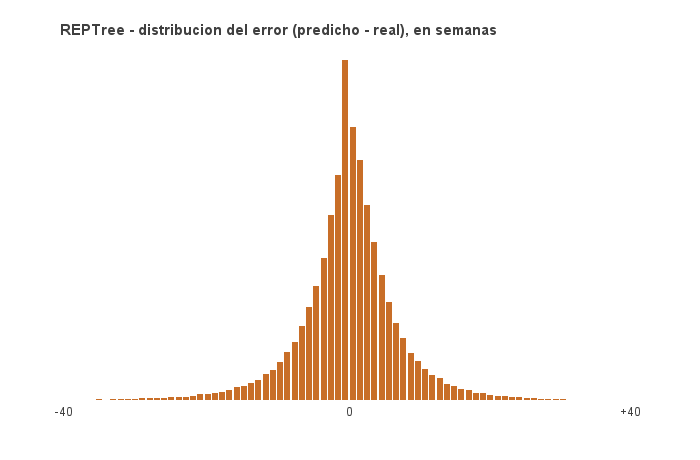
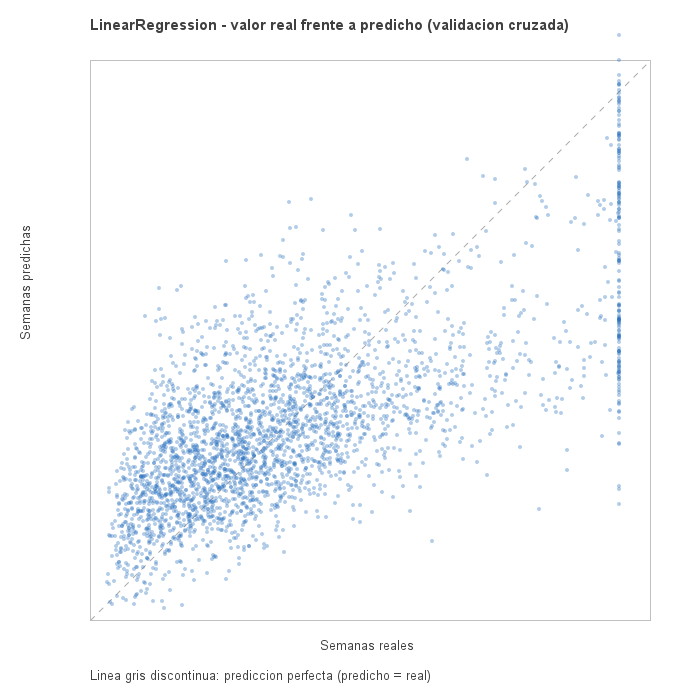
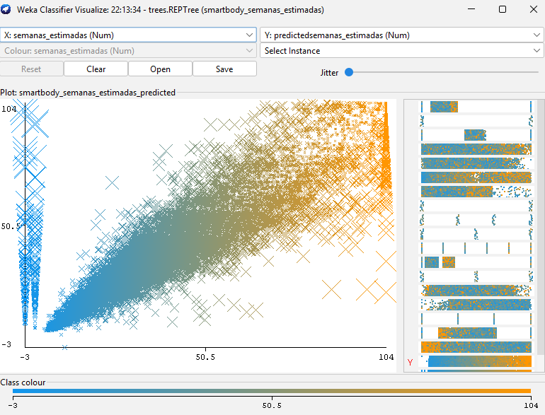
diferencia_peso_kg, después objetivo, balance_energetico_kcal y adherencia_nutricional_pct.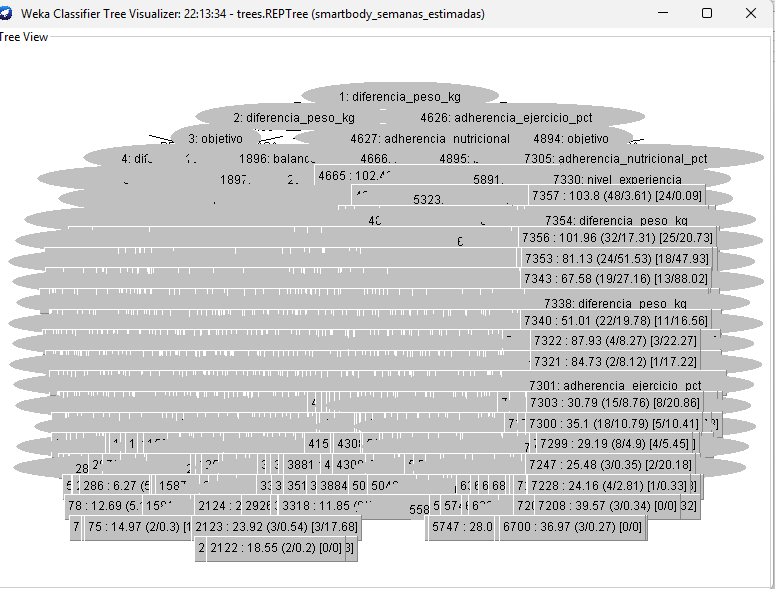
semanas_estimadas tiene un pico en 104 semanas, que es el tope de la fórmula. Eso hace que el modelo aprenda ese tope.El modelo REPTree se integró en el microservicio progreso, que ya tenía el historial de medidas. Con Weka en el pom.xml del servicio, el flujo es:
ModeloPrediccion carga el archivo modelos/prediccion-reptree-1.0.model una sola vez.ReglasPrediccion valida la entrada y calcula las variables derivadas con las mismas fórmulas del generador.PrediccionService arma la instancia con el orden y los tipos del entrenamiento, pide la predicción y guarda el resultado.PrediccionController expone los endpoints REST, protegidos con JWT.@PostConstruct
void cargar() {
try (InputStream entrada = new ClassPathResource(RECURSO).getInputStream()) {
Object[] contenido = (Object[]) SerializationHelper.read(entrada);
clasificador = (Classifier) contenido[0];
cabecera = (Instances) contenido[1];
cabecera.setClassIndex(cabecera.numAttributes() - 1);
} catch (Exception e) {
// el servicio sigue; el endpoint responde 503
}
}
public synchronized double predecir(Map<String, Object> valores) {
DenseInstance instancia = new DenseInstance(cabecera.numAttributes());
instancia.setDataset(cabecera);
for (int i = 0; i < cabecera.numAttributes(); i++) {
if (i == cabecera.classIndex()) continue;
Attribute atributo = cabecera.attribute(i);
Object valor = valores.get(atributo.name());
if (atributo.isNumeric()) instancia.setValue(atributo, ((Number) valor).doubleValue());
else instancia.setValue(atributo, valor.toString());
}
instancia.setMissing(cabecera.classIndex());
return clasificador.classifyInstance(instancia);
}
El modelo nunca se reentrena en una petición. La cabecera guardada garantiza que los atributos lleguen con el mismo nombre, tipo, valores nominales y orden que en el entrenamiento.
| Método y ruta | Función |
|---|---|
| POST /api/predicciones/tiempo-perdida-peso | Calcula la estimación, la guarda y responde 201. |
| GET /api/predicciones | Historial del usuario autenticado. |
| GET /api/predicciones/{id}/seguimiento | Compara la estimación con las medidas reales registradas después. |
Entrada enviada con el JWT del usuario de prueba (hombre de 28 años, 170 cm, de 90 a 80 kg):
{ "pesoInicial": 90.0, "pesoObjetivo": 80.0, "alturaCm": 170.0, "edad": 28,
"sexo": "MASCULINO", "objetivo": "PERDER_PESO", "nivelActividad": "MODERADO",
"nivelExperiencia": "INTERMEDIO", "tipoActividad": "MIXTO",
"entrenamientosSemana": 4, "minutosSesion": 45, "restriccionesTotal": 0,
"caloriasObjetivo": 2430.0, "adherenciaNutricional": 90.0, "adherenciaEjercicio": 85.0 }
Respuesta obtenida (HTTP 201):
{ "id": 1, "pesoInicial": 90.0, "pesoObjetivo": 80.0, "objetivo": "PERDER_PESO",
"semanasEstimadas": 22.6, "fechaAproximada": "2027-04-17",
"modelo": "REPTree", "versionModelo": "1.0", "tipoPrediccion": "orientativa",
"aviso": "Estimación orientativa ... No garantiza una pérdida ni una ganancia de peso ..." }
| Caso | Respuesta |
|---|---|
| Peso objetivo mayor que el inicial en PERDER_PESO | 400: "Para perder peso, el peso objetivo debe ser menor que el peso inicial." |
| Calorías por debajo del mínimo seguro (1.500 kcal hombres, 1.200 mujeres) | 400: "Las calorías objetivo no pueden ser menores a 1500 kcal al día." |
| Campos faltantes o valores imposibles | 400 con la lista de campos y el motivo de cada uno. |
| Sin token JWT | 401 |
| Predicción de otro usuario | 404: la predicción no existe para ese usuario. |
pesoActual: 85.0, avancePorcentaje: 50.0 y estado: EN_SEGUIMIENTO. El ritmo real en kg por semana solo se calcula después de una semana, para no mostrar valores absurdos al inicio.La app incluye la pantalla Tiempo hasta tu objetivo, con el patrón MVP del proyecto. Llena los datos del perfil y del plan automáticamente y pide al usuario el peso objetivo, el nivel y el tipo de actividad, y el porcentaje de seguimiento del plan. Muestra la estimación, la fecha aproximada, el progreso real con la gráfica de peso y el aviso de estimación orientativa. Compila y sus 6 pruebas unitarias pasan.
backend), que es el que la app usa por defecto en desarrollo, y el microservicio progreso, que se usa detrás del gateway de Nginx en el despliegue con Docker o Kubernetes. Ambos reciben las mismas rutas.| Nivel | Qué se probó | Resultado |
|---|---|---|
| Weka (Java) | Carga del ARFF, limpieza, entrenamiento, validación cruzada, métricas, guardado y carga del modelo. | Ejecutado. Cifras en la sección 8. |
| Backend monolito | Predicción, validaciones, seguimiento y aislamiento entre usuarios, con la app apuntando a este backend. | 103 pruebas unitarias en verde (18 nuevas de predicción). Flujo real con JWT y MySQL verificado. |
| Backend progreso (microservicio) | Mismas pruebas de predicción sobre el microservicio. | 58 pruebas unitarias en verde (19 nuevas de predicción). |
| Integración | Login con JWT real, POST, GET de historial, GET de seguimiento y errores 400, 401 y 404 contra MySQL. | Verificado con respuestas reales. |
| Android | Lógica de construcción de la petición (6 pruebas) y compilación de la app. | BUILD SUCCESSFUL. Pendiente probar en dispositivo. |
mineria\ (scripts, informes y modelos) y services\progreso\ (integración). Semilla de reproducibilidad: 42. Versión de Weka: 3.8.6.